前言
课件地址
https://github.com/buglas/threejs-lesson
课堂目标
- 认识three.js 提供的内置几何体
- 自定义几何体
知识点
- 内置几何体
- 自定义几何体
- 几何体顶点数据的读写
1-内置几何体
three.js 的内置几何体大致可分成以下几类：
- 二维几何体
- PlaneGeometry 矩形平面
- CircleGeometry 圆形平面
- RingGeometry 圆环平面
- ShapeGeometry 二维图形
- 三维几何体
- BoxGeometry 立方体
- TetrahedronGeometry 四面体
- OctahedronGeometry 八面体
- DodecahedronGeometry 十二面体
- IcosahedronGeometry 二十面体
- PolyhedronGeometry 多面体
- SphereGeometry 球体
- ConeGeometry 圆锥
- CylinderGeometry 圆柱
- TorusGeometry 三维圆环
- TorusKnotGeometry 扭结
- 路径合成几何体
- TubeGeometry 管道
- LatheGeometry 车削
- ExtrudeGeometry 挤压
- 线性几何体
- WireframeGeometry 网格几何体
- EdgesGeometry 边缘几何体
接下来，咱们详细说一下其绘制方法。
1-1-二维几何体
PlaneGeometry 矩形平面
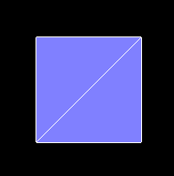
PlaneGeometry(width : Float, height : Float, widthSegments : Integer, heightSegments : Integer)
- width — 平面沿着X轴的宽度。默认值是1。
- height — 平面沿着Y轴的高度。默认值是1。
- widthSegments — （可选）平面的宽度分段数，默认值是1。
- heightSegments — （可选）平面的高度分段数，默认值是1。
代码实例：
1.先参照上一篇的项目架构一个一个react+ts 项目，详情参见源码。
2.建立一个Stage对象，把渲染器、场景、相机、轨道控制器和响应式布局都封装进去。这样在写例子的时候会比较方便、整洁。
- src/component/Stage.ts
import { PerspectiveCamera, Scene, WebGLRenderer } from "three";
import { OrbitControls } from "three/examples/jsm/controls/OrbitControls";
export default class Stage {
// 渲染器
renderer: WebGLRenderer;
// 场景
scene: Scene;
// 相机
camera: PerspectiveCamera;
// 轨道控制器
controls: OrbitControls;
// 渲染之前
beforeRender = (time: number = 0) => {};
// 初始化场景
constructor(x: number = 0, y: number = 0, z: number = 12) {
this.scene = new Scene();
this.renderer = new WebGLRenderer({ antialias: true });
const { clientWidth, clientHeight } = this.renderer.domElement;
this.renderer.setSize(clientWidth * devicePixelRatio, clientHeight * devicePixelRatio, false);
this.camera = new PerspectiveCamera(45, clientWidth / clientHeight, 0.1, 1000);
this.camera.position.set(x, y, z);
this.camera.lookAt(0, 0, 0);
this.controls = new OrbitControls(this.camera, this.renderer.domElement);
}
// 响应式布局
responsive() {
const { renderer, camera } = this;
if (this.resizeRendererToDisplaySize(renderer)) {
const { clientWidth, clientHeight } = renderer.domElement;
camera.aspect = clientWidth / clientHeight;
camera.updateProjectionMatrix();
}
}
// 重置渲染尺寸
resizeRendererToDisplaySize(renderer: WebGLRenderer): boolean {
const { width, height, clientWidth, clientHeight } = renderer.domElement;
const [w, h] = [clientWidth * devicePixelRatio, clientHeight * devicePixelRatio];
const needResize = width !== w || height !== h;
if (needResize) {
renderer.setSize(w, h, false);
}
return needResize;
}
// 连续渲染
animate(time = 0) {
this.responsive();
this.beforeRender(time);
this.renderer.render(this.scene, this.camera);
requestAnimationFrame((time) => {
this.animate(time);
});
}
}
3.绘制矩形平面。
- src/component/Plane.ts
import React, { useRef, useEffect } from "react";
import {
Mesh,
MeshBasicMaterial,
MeshNormalMaterial,
PlaneGeometry,
} from "three";
import Stage from "../component/Stage";
import "./fullScreen.css";
const stage = new Stage();
const { scene, renderer } = stage;
const geometry = new PlaneGeometry();
{
const material = new MeshNormalMaterial({
polygonOffset: true,
polygonOffsetFactor: 1,
polygonOffsetUnits: 1,
});
const mesh = new Mesh(geometry, material);
scene.add(mesh);
}
{
const material = new MeshBasicMaterial({
wireframe: true,
});
const mesh = new Mesh(geometry, material);
scene.add(mesh);
}
const Plane: React.FC = (): JSX.Element => {
const divRef = useRef<HTMLDivElement>(null);
useEffect(() => {
const { current } = divRef;
if (current) {
current.innerHTML = "";
current.append(renderer.domElement);
stage.animate();
}
}, []);
return <div ref={divRef} className="canvasWrapper"></div>;
};
export default Plane;
CircleGeometry 圆形平面
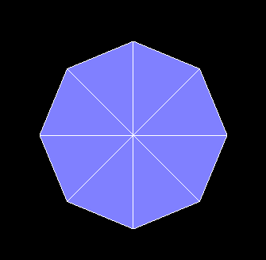
CircleGeometry(radius : Float, segments : Integer, thetaStart : Float, thetaLength : Float)
- radius — 圆形的半径，默认值为1
- segments — 分段（三角面）的数量，最小值为3，默认值为8。
- thetaStart — 第一个分段的起始角度，默认为0。（three o'clock position）
- thetaLength — 圆形扇区的中心角，通常被称为“θ”（西塔）。默认值是2*Pi，这使其成为一个完整的圆。
RingGeometry 圆环平面
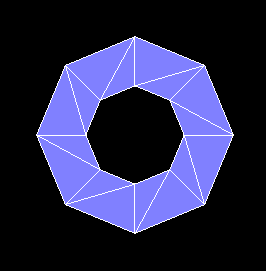
RingGeometry(innerRadius : Float, outerRadius : Float, thetaSegments : Integer, phiSegments : Integer, thetaStart : Float, thetaLength : Float)
- innerRadius — 内部半径，默认值为0.5。
- outerRadius — 外部半径，默认值为1。
- thetaSegments — 圆环的分段数。这个值越大，圆环就越圆。最小值为3，默认值为8。
- phiSegments — 最小值为1，默认值为8。
- thetaStart — 起始角度，默认值为0。
- thetaLength — 圆心角，默认值为Math.PI * 2。
ShapeGeometry 二维图形
ShapeGeometry(shapes : Array, curveSegments : Integer)
- shapes — 一个单独的shape，或者一个包含形状的Array。
- curveSegments - Integer - 每一个形状的分段数，默认值为12。
代码示例：
const shape = new Shape();
shape.moveTo(0, 0);
shape.bezierCurveTo(1, 1, -1, 1, 0, 0);
const geometry = new ShapeGeometry(shape);
效果如下：
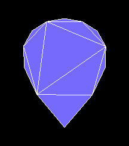
1-2-三维几何体
BoxGeometry 立方体
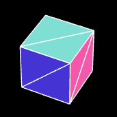
BoxGeometry(width : Float, height : Float, depth : Float, widthSegments : Integer, heightSegments : Integer, depthSegments : Integer)
- width — X轴上面的宽度，默认值为1。
- height — Y轴上面的高度，默认值为1。
- depth — Z轴上面的深度，默认值为1。
- widthSegments — （可选）宽度的分段数，默认值是1。
- heightSegments — （可选）高度的分段数，默认值是1。
- depthSegments — （可选）深度的分段数，默认值是1。
TetrahedronGeometry 四面体
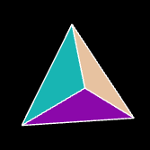
TetrahedronGeometry(radius : Float, detail : Integer)
- radius — 四面体的半径，默认值为1。
- detail — 默认值为0。将这个值设为一个大于0的数将会为它增加一些顶点，使其不再是一个四面体。
OctahedronGeometry 八面体
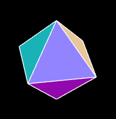
OctahedronGeometry(radius : Float, detail : Integer)
- radius — 八面体的半径，默认值为1。
- detail — 默认值为0，将这个值设为一个大于0的数将会为它增加一些顶点，使其不再是一个八面体。
DodecahedronGeometry 十二面体
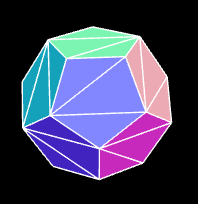
DodecahedronGeometry(radius : Float, detail : Integer)
- radius — 十二面体的半径，默认值为1。
- detail — 默认值为0。将这个值设为一个大于0的数将会为它增加一些顶点，使其不再是一个十二面体。
IcosahedronGeometry 二十面体
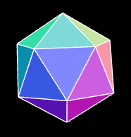
IcosahedronGeometry(radius : Float, detail : Integer)
- radius — 二十面体的半径，默认为1。
- detail — 默认值为0。将这个值设为一个大于0的数将会为它增加一些顶点，使其不再是一个二十面体。当这个值大于1的时候，实际上它将变成一个球体。
PolyhedronGeometry 多面体
PolyhedronGeometry(vertices : Array, indices : Array, radius : Float, detail : Integer
- vertices — 一个顶点Array（数组）：[1,1,1, -1,-1,-1, ... ]。
- indices — 一个构成面的索引Array（数组）， [0,1,2, 2,3,0, ... ]。
- radius — Float - 最终形状的半径。
- detail — Integer - 将对这个几何体细分多少个级别。细节越多，形状就越平滑。
代码示例：
const geometry = new PolyhedronGeometry(
[-1, -1, -1, 1, -1, -1, 1, 1, -1, -1, 1, -1, -1, -1, 1, 1, -1, 1, 1, 1, 1, -1, 1, 1],
[2, 1, 0, 0, 3, 2, 0, 4, 7, 7, 3, 0, 0, 1, 5, 5, 4, 0, 1, 2, 6, 6, 5, 1, 2, 3, 7, 7, 6, 2, 4, 5, 6, 6, 7, 4],
1,
1
);
效果如下：
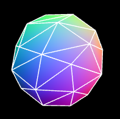
SphereGeometry 球体
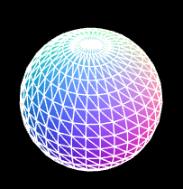
SphereGeometry(radius : Float, widthSegments : Integer, heightSegments : Integer, phiStart : Float, phiLength : Float, thetaStart : Float, thetaLength : Float)
- radius — 球体半径，默认为1。
- widthSegments — 水平分段数（沿着经线分段），最小值为3，默认值为32。
- heightSegments — 垂直分段数（沿着纬线分段），最小值为2，默认值为16。
- phiStart — 指定水平（经线）起始角度，默认值为0。。
- phiLength — 指定水平（经线）扫描角度的大小，默认值为 Math.PI * 2。
- thetaStart — 指定垂直（纬线）起始角度，默认值为0。
- thetaLength — 指定垂直（纬线）扫描角度大小，默认值为 Math.PI。
该几何体是通过扫描并计算围绕着Y轴（水平扫描）和X轴（垂直扫描）的顶点来创建的。
因此，我们可以通过为phiStart，phiLength，thetaStart和thetaLength属性对球体进行切片。
ConeGeometry 圆锥
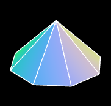
ConeGeometry(radius : Float, height : Float, radialSegments : Integer, heightSegments : Integer, openEnded : Boolean, thetaStart : Float, thetaLength : Float)
- radius — 圆锥底部的半径，默认值为1。
- height — 圆锥的高度，默认值为1。
- radialSegments — 圆锥侧面周围的分段数，默认为8。
- heightSegments — 圆锥侧面沿着其高度的分段数，默认值为1。
- openEnded — 一个Boolean值，指明该圆锥的底面是开放的还是封顶的。默认值为false，即其底面默认是封顶的。
- thetaStart — 第一个分段的起始角度，默认为0。（three o'clock position）
- thetaLength — 圆锥底面圆扇区的中心角，通常被称为“θ”（西塔）。默认值是2*Pi，这使其成为一个完整的圆锥。
CylinderGeometry 圆柱
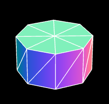
CylinderGeometry(radiusTop : Float, radiusBottom : Float, height : Float, radialSegments : Integer, heightSegments : Integer, openEnded : Boolean, thetaStart : Float, thetaLength : Float)
- radiusTop — 圆柱的顶部半径，默认值是1。
- radiusBottom — 圆柱的底部半径，默认值是1。
- height — 圆柱的高度，默认值是1。
- radialSegments — 圆柱侧面周围的分段数，默认为8。
- heightSegments — 圆柱侧面沿着其高度的分段数，默认值为1。
- openEnded — 一个Boolean值，表示该圆柱的底面和顶面是否开放。默认值为false，即闭合。
- thetaStart — 第一个分段的起始角度，默认为0。（three o'clock position）
- thetaLength — 圆柱底面圆扇区的中心角，通常被称为“θ”（西塔）。默认值是2*Pi，这使其成为一个完整的圆柱。
TorusGeometry 三维圆环
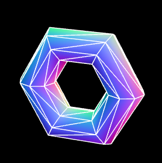
TorusGeometry(radius : Float, tube : Float, radialSegments : Integer, tubularSegments : Integer, arc : Float)
- radius - 环面的半径，从环面的中心到管道横截面的中心。默认值是1。
- tube — 管道的半径，默认值为0.4。
- radialSegments — 管道横截面的分段数，默认值为8。
- tubularSegments —圆环x的分段数，默认值为6。
- arc — 圆环的圆心角（单位是弧度），默认值为Math.PI * 2。
TorusKnotGeometry 扭结
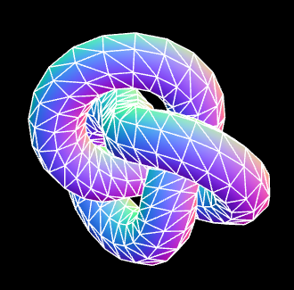
TorusKnotGeometry(radius : Float, tube : Float, tubularSegments : Integer, radialSegments : Integer, p : Integer, q : Integer)
radius - 圆环的半径，默认值为1。
tube — 管道的半径，默认值为0.4。
tubularSegments — 扭结线的分段数量，默认值为64。
radialSegments — 管道分段数量，默认值为8。
p — 这个值决定了几何体将绕着其旋转对称轴旋转多少次，默认值是2。
q — 这个值决定了几何体将绕着其内部圆环旋转多少次，默认值是3。
1-3-路径合成几何体
TubeGeometry 管道
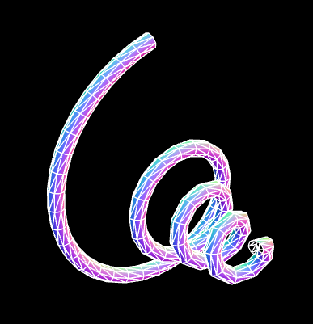
TubeGeometry(path : Curve, tubularSegments : Integer, radius : Float, radialSegments : Integer, closed : Boolean)
- path — Curve - 一个由基类Curve继承而来的3D路径。 Default is a quadratic bezier curve.
- tubularSegments — Integer - 组成这一管道的分段数，默认值为64。
- radius — Float - 管道的半径，默认值为1。
- radialSegments — Integer - 管道横截面的分段数目，默认值为8。
- closed — Boolean 管道的两端是否闭合，默认值为false。
代码示例：
1.自定义一个绘制曲线的curve对象
- src/component/CustomSinCurve
import { Curve, Vector3 } from "three";
export class CustomSinCurve extends Curve<Vector3> {
getPoint(t: number): Vector3 {
const a = t * 4 + 1;
const ty = (a * Math.cos(t * Math.PI * 2 * 4)) / 8;
const tz = (a * Math.sin(t * Math.PI * 2 * 4)) / 8;
return new Vector3(t, ty, tz);
}
}
2.建立管道几何体
const path = new CustomSinCurve();
const geometry = new TubeGeometry(path, 128, 0.05, 3, false);
LatheGeometry 车削
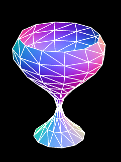
LatheGeometry(points : Array, segments : Integer, phiStart : Float, phiLength : Float)
- points — 一个Vector2对象数组。每个点的X坐标必须大于0。
- segments — 要生成的车削几何体圆周分段的数量，默认值是12。
- phiStart — 以弧度表示的起始角度，默认值为0。
- phiLength — 车削部分的弧度（0-2PI）范围，2PI将是一个完全闭合的、完整的车削几何体，小于2PI是部分的车削。默认值是2PI。
代码示例：
const points = [];
for (let i = 0; i < 1; i += 0.1) {
const x = (Math.sin(i * Math.PI * 1.8 + 2.8) + 1.1) / 5;
points.push(new Vector2(x, i));
}
const geometry = new LatheGeometry(points, 32, 0, Math.PI);
ExtrudeGeometry 挤压
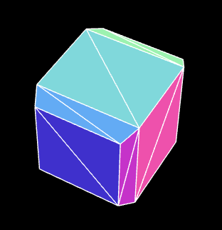
ExtrudeGeometry(shapes : Array, options : Object)
- shapes — 形状或者一个包含形状的数组。
- options — 一个包含有下列参数的对象：
- steps — int，用于沿着挤出样条的深度细分的点的数量，默认值为1。
- depth — float，挤出的形状的深度，默认值为1。
- bevelEnabled — bool，对挤出的形状应用是否斜角，默认值为true。
- bevelThickness — float，设置原始形状上斜角的厚度。默认值为0.2。
- bevelSize — float。斜角与原始形状轮廓之间的延伸距离，默认值为bevelThickness-0.1。
- bevelOffset — float. Distance from the shape outline that the bevel starts. Default is 0.
- bevelSegments — int。斜角的分段层数，默认值为3。
- extrudePath — THREE.Curve对象。一条沿着被挤出形状的三维样条线。Bevels not supported for path extrusion.
- UVGenerator — Object。提供了UV生成器函数的对象。
该对象可以将一个二维形状挤成一个三维几何体。
当使用这个几何体创建Mesh的时候，如果你希望分别对它的表面和它挤出的侧面使用单独的材质，你可以使用一个材质数组。 第一个材质将用于其表面；第二个材质则将用于其挤压出的侧面。
代码示例：
const shape = new Shape();
shape.moveTo(0, 0);
shape.lineTo(0, 1);
shape.lineTo(1, 1);
shape.lineTo(1, 0);
shape.lineTo(0, 0);
const extrudeSettings = {
steps: 1,
depth: 1,
bevelEnabled: true,
bevelThickness: 0.2,
bevelSize: 0.1,
bevelOffset: 0,
bevelSegments: 1,
};
const geometry = new ExtrudeGeometry(shape, extrudeSettings);
除此之外，我们还可以通过extrudePath 属性让一个二维图形沿curve 路径做挤压。
const shape = new Shape();
shape.moveTo(0, 0);
shape.lineTo(0.1, 0);
shape.lineTo(0.1, 0.1);
const path = new CustomSinCurve();
const geometry = new ExtrudeGeometry(shape, {
steps: 128,
extrudePath: path,
});
效果如下：
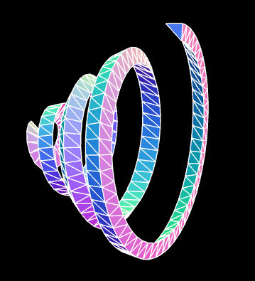
1-4-线性几何体
WireframeGeometry 网格几何体
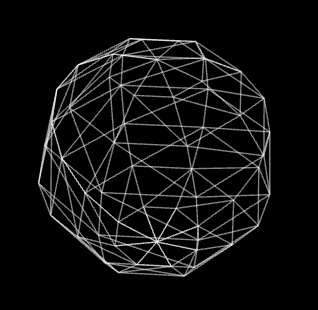
WireframeGeometry( geometry : BufferGeometry )
- geometry — 任意几何体对象。
代码示例：
const line = new LineSegments(wireframe);
const mat = line.material as LineBasicMaterial;
mat.depthTest = false;
mat.opacity = 0.5;
mat.transparent = true;
EdgesGeometry 边缘几何体
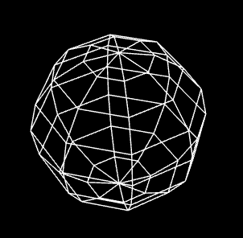
EdgesGeometry( geometry : BufferGeometry, thresholdAngle : Integer )
- geometry — 任何一个几何体对象。
- thresholdAngle — 仅当相邻面的法线之间的角度（单位为角度）超过这个值时，才会渲染边缘。默认值为1。
代码示例：
const geometry = new SphereGeometry(2, 8, 8);
const edges = new EdgesGeometry(geometry);
const line = new LineSegments(edges);
2-自定义几何体
2-1-基本概念
BufferGeometry 是所有three.js 内置几何体的基类，通过此基类可以自定义几何体。
BufferGeometry 具备以下重要属性：
- position 顶点位置
- index 顶点索引
- normal 法线
- uv 坐标
- color 顶点颜色

从上图可以看出，在顶点索引为4的地方，position 、normal 、uv 、color 是基于顶点一一对应的。
接下来咱们自己自定义一个几何体。
2-2-自定义立方体
1.在下面的vertices里，我们按照对立三角形的绘图方式，定义了立方体的6个面，共36个顶点。
const vertices = [
// front
{ pos: [-1, -1, 1], norm: [ 0, 0, 1], uv: [0, 0], },
{ pos: [ 1, -1, 1], norm: [ 0, 0, 1], uv: [1, 0], },
{ pos: [-1, 1, 1], norm: [ 0, 0, 1], uv: [0, 1], },
{ pos: [-1, 1, 1], norm: [ 0, 0, 1], uv: [0, 1], },
{ pos: [ 1, -1, 1], norm: [ 0, 0, 1], uv: [1, 0], },
{ pos: [ 1, 1, 1], norm: [ 0, 0, 1], uv: [1, 1], },
// right
{ pos: [ 1, -1, 1], norm: [ 1, 0, 0], uv: [0, 0], },
{ pos: [ 1, -1, -1], norm: [ 1, 0, 0], uv: [1, 0], },
{ pos: [ 1, 1, 1], norm: [ 1, 0, 0], uv: [0, 1], },
{ pos: [ 1, 1, 1], norm: [ 1, 0, 0], uv: [0, 1], },
{ pos: [ 1, -1, -1], norm: [ 1, 0, 0], uv: [1, 0], },
{ pos: [ 1, 1, -1], norm: [ 1, 0, 0], uv: [1, 1], },
// back
{ pos: [ 1, -1, -1], norm: [ 0, 0, -1], uv: [0, 0], },
{ pos: [-1, -1, -1], norm: [ 0, 0, -1], uv: [1, 0], },
{ pos: [ 1, 1, -1], norm: [ 0, 0, -1], uv: [0, 1], },
{ pos: [ 1, 1, -1], norm: [ 0, 0, -1], uv: [0, 1], },
{ pos: [-1, -1, -1], norm: [ 0, 0, -1], uv: [1, 0], },
{ pos: [-1, 1, -1], norm: [ 0, 0, -1], uv: [1, 1], },
// left
{ pos: [-1, -1, -1], norm: [-1, 0, 0], uv: [0, 0], },
{ pos: [-1, -1, 1], norm: [-1, 0, 0], uv: [1, 0], },
{ pos: [-1, 1, -1], norm: [-1, 0, 0], uv: [0, 1], },
{ pos: [-1, 1, -1], norm: [-1, 0, 0], uv: [0, 1], },
{ pos: [-1, -1, 1], norm: [-1, 0, 0], uv: [1, 0], },
{ pos: [-1, 1, 1], norm: [-1, 0, 0], uv: [1, 1], },
// top
{ pos: [ 1, 1, -1], norm: [ 0, 1, 0], uv: [0, 0], },
{ pos: [-1, 1, -1], norm: [ 0, 1, 0], uv: [1, 0], },
{ pos: [ 1, 1, 1], norm: [ 0, 1, 0], uv: [0, 1], },
{ pos: [ 1, 1, 1], norm: [ 0, 1, 0], uv: [0, 1], },
{ pos: [-1, 1, -1], norm: [ 0, 1, 0], uv: [1, 0], },
{ pos: [-1, 1, 1], norm: [ 0, 1, 0], uv: [1, 1], },
// bottom
{ pos: [ 1, -1, 1], norm: [ 0, -1, 0], uv: [0, 0], },
{ pos: [-1, -1, 1], norm: [ 0, -1, 0], uv: [1, 0], },
{ pos: [ 1, -1, -1], norm: [ 0, -1, 0], uv: [0, 1], },
{ pos: [ 1, -1, -1], norm: [ 0, -1, 0], uv: [0, 1], },
{ pos: [-1, -1, 1], norm: [ 0, -1, 0], uv: [1, 0], },
{ pos: [-1, -1, -1], norm: [ 0, -1, 0], uv: [1, 1], },
];
2.按照属性将这些顶点分成三组：
const positions = [];
const normals = [];
const uvs = [];
for (const vertex of vertices) {
positions.push(...vertex.pos);
normals.push(...vertex.norm);
uvs.push(...vertex.uv);
}
3.基于positions、normals 和uvs 建立BufferAttribute 对象。
const geometry = new BufferGeometry();
const positionNumComponents = 3;
const normalNumComponents = 3;
const uvNumComponents = 2;
const positionAttr=new BufferAttribute(
new Float32Array(positions),
positionNumComponents
)
const normalAttr=new BufferAttribute(
new Float32Array(normals),
normalNumComponents
)
const uvAttr=new BufferAttribute(
new Float32Array(uvs),
uvNumComponents
)
BufferAttribute 对象就是对顶点着色器中Attribute 变量的管理，通过此对象可以存储顶点点位、顶点数量、矢量长度等，并可以对其进行矩阵变换、拷贝、读写等。
4.将BufferAttribute 对象添加到geometry 几何体中。
geometry.setAttribute('position',positionAttr);
geometry.setAttribute('normal',normalAttr);
geometry.setAttribute('uv',uvAttr);
在setAttribute()中，'position'、'normal'、'uv'、' color ' 都是内置attribute 变量名，不能随便写。
当然如果我们想自定义attribute 变量名，那就可以随便写了，只要符合基本的命名规范就行。
几何体形状如下：
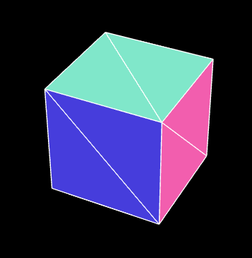
自定义几何体的基本方法就是这样，接下来我们还可以使用顶点索引自定义几何体。
2-3-顶点索引
1.将vertices 设置为4*6=24 个点，一个面4个点。
const vertices = [
// front
{ pos: [-1, -1, 1], norm: [ 0, 0, 1], uv: [0, 0], }, // 0
{ pos: [ 1, -1, 1], norm: [ 0, 0, 1], uv: [1, 0], }, // 1
{ pos: [-1, 1, 1], norm: [ 0, 0, 1], uv: [0, 1], }, // 2
{ pos: [ 1, 1, 1], norm: [ 0, 0, 1], uv: [1, 1], }, // 3
// right
{ pos: [ 1, -1, 1], norm: [ 1, 0, 0], uv: [0, 0], }, // 4
{ pos: [ 1, -1, -1], norm: [ 1, 0, 0], uv: [1, 0], }, // 5
{ pos: [ 1, 1, 1], norm: [ 1, 0, 0], uv: [0, 1], }, // 6
{ pos: [ 1, 1, -1], norm: [ 1, 0, 0], uv: [1, 1], }, // 7
// back
{ pos: [ 1, -1, -1], norm: [ 0, 0, -1], uv: [0, 0], }, // 8
{ pos: [-1, -1, -1], norm: [ 0, 0, -1], uv: [1, 0], }, // 9
{ pos: [ 1, 1, -1], norm: [ 0, 0, -1], uv: [0, 1], }, // 10
{ pos: [-1, 1, -1], norm: [ 0, 0, -1], uv: [1, 1], }, // 11
// left
{ pos: [-1, -1, -1], norm: [-1, 0, 0], uv: [0, 0], }, // 12
{ pos: [-1, -1, 1], norm: [-1, 0, 0], uv: [1, 0], }, // 13
{ pos: [-1, 1, -1], norm: [-1, 0, 0], uv: [0, 1], }, // 14
{ pos: [-1, 1, 1], norm: [-1, 0, 0], uv: [1, 1], }, // 15
// top
{ pos: [ 1, 1, -1], norm: [ 0, 1, 0], uv: [0, 0], }, // 16
{ pos: [-1, 1, -1], norm: [ 0, 1, 0], uv: [1, 0], }, // 17
{ pos: [ 1, 1, 1], norm: [ 0, 1, 0], uv: [0, 1], }, // 18
{ pos: [-1, 1, 1], norm: [ 0, 1, 0], uv: [1, 1], }, // 19
// bottom
{ pos: [ 1, -1, 1], norm: [ 0, -1, 0], uv: [0, 0], }, // 20
{ pos: [-1, -1, 1], norm: [ 0, -1, 0], uv: [1, 0], }, // 21
{ pos: [ 1, -1, -1], norm: [ 0, -1, 0], uv: [0, 1], }, // 22
{ pos: [-1, -1, -1], norm: [ 0, -1, 0], uv: [1, 1], }, // 23
];
2.用BufferGeometry.setIndex() 方法设置顶点索引。
geometry.setIndex([
// front
0, 1, 2, 2, 1, 3,
// right
4, 5, 6, 6, 5, 7,
// back
8, 9, 10, 10, 9, 11,
// left
12, 13, 14, 14, 13, 15,
// top
16, 17, 18, 18, 17, 19,
// bottom
20, 21, 22, 22, 21, 23,
]);
2-4-计算法线
BufferGeometry有一个自己根据现有顶点计算法线的方法computeVertexNormals()。
computeVertexNormals() 方法是按照逐顶点着色的方式计算法线的。
逐顶点着色的原理我们在webgl 的光里说过。
代码示例：
geometry.setAttribute("position", positionAttr);
// geometry.setAttribute("normal", normalAttr);
geometry.setAttribute("uv", uvAttr);
geometry.setIndex([0, 1, 2, 2, 1, 3, 4, 5, 6, 6, 5, 7, 8, 9, 10, 10, 9, 11, 12, 13, 14, 14, 13, 15, 16, 17, 18, 18, 17, 19, 20, 21, 22, 22, 21, 23]);
geometry.computeVertexNormals();
我们可以用VertexNormalsHelper 对象将一个Mesh对象的法线显示出来：
const cube = new Mesh(geometry, material);
const helper = new VertexNormalsHelper(cube);
scene.add(mesh, helper);
效果如下：
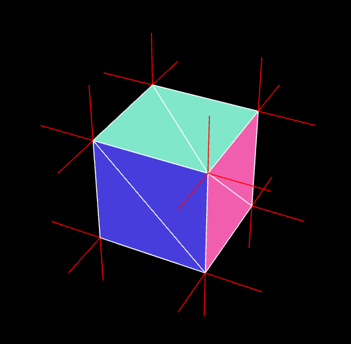
在用computeVertexNormals() 方法计算法线的时候，若在光滑的物体表面发现了明显的接缝线，那这可能就是由两排位置相同、法线不同的顶点引起的。
这需要我们自己根据模型特征调整法线，将这两排顶点的法线调成一样。
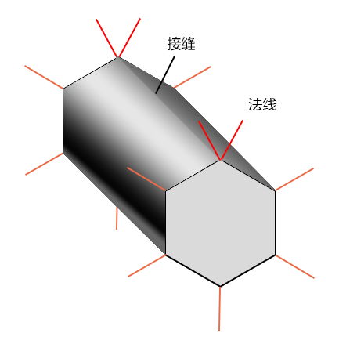
2-5-顶点数据的更新
当我们想要修改几何体的顶点数据的时候，可以直接通过BufferGeometry 对象下的BufferAttribute 修改。
举个例子：我要在一秒后，把上面自定义的几何体打开一个口子。
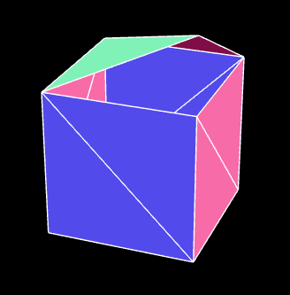
代码如下：
setTimeout(() => {
positionAttr.setXYZ(18, 1, 2, 1);
positionAttr.needsUpdate = true;
}, 1000);
接下来在渲染器执行render() 方法时，便会将最新的顶点数据传递给顶点着色器里的attribute 变量。
关于几何体的基础知识，咱们就说到这，接下来咱们做点好玩的东西，巩固咱们之前的所学。
案例-自定义波浪球
下面这个绚丽的波浪球就是我们接下来要做的，我之后还会让它蠕动来。其中会制涉及的知识点有自定义几何体的封装、几何体顶点数据的读写、正弦函数动画等。
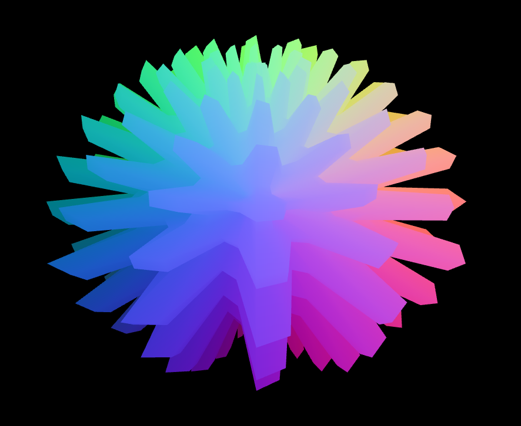
1.封装一个波浪球对象。
import {
BufferGeometry,
Vector3,
Object3D,
BufferAttribute,
InterleavedBufferAttribute,
Euler,
} from "three"
const pi2 = Math.PI * 2
export default class WaveBall extends BufferGeometry {
// 分段数
widthSegments: number
heightSegments: number
// 正弦参数y=Asin(ωx+φ)
a: number = 0.7
omega: number = 12
constructor(widthSegments: number = 18, heightSegments: number = 12) {
super()
this.widthSegments = widthSegments
this.heightSegments = heightSegments
this.init()
}
init() {
const { widthSegments, heightSegments } = this
//网格线的数量
const [width, height] = [widthSegments + 1, heightSegments + 1]
//顶点数量
const count = width * height
//顶点点位
const positions = new Float32Array(count * 3)
//顶点索引
const indices = []
//根据经纬度计算顶点点位的方法
const setPos = SetPos(positions)
// 逐行列遍历
for (let y = 0; y < height; ++y) {
// 维度[-Math.PI/2,Math.PI/2]
const lat = (y / heightSegments - 0.5) * Math.PI
for (let x = 0; x < width; ++x) {
// 经度[-Math.PI,Math.PI]
const long = (x / widthSegments - 0.5) * Math.PI * 2
// 设置顶点点位
setPos(lat, long)
// 设置顶点索引
if (y && x) {
// 一个矩形格子的左上lt、右上rt、左下lb、右下rb点
const lt = (y - 1) * width + (x - 1)
const rt = (y - 1) * width + x
const lb = y * width + (x - 1)
const rb = y * width + x
indices.push(lb, rb, lt, lt, rb, rt)
}
}
}
this.setAttribute("position", new BufferAttribute(positions, 3))
this.setIndex(indices)
this.computeVertexNormals()
}
//波浪
wave(phi = 0) {
const { widthSegments, heightSegments, a, omega } = this
//网格线的数量
const [width, height] = [widthSegments + 1, heightSegments + 1]
// 顶点点位
const posAttr = this.getAttribute("position")
// 修改点位的方法
const changePos = ChangePos(posAttr)
// 一圈波浪线的总弧度
const allAng = omega * pi2
// 每个分段的弧度
const yAng = allAng / heightSegments
const xAng = allAng / widthSegments
// 逐行列遍历
for (let y = 0; y < height; ++y) {
// y向起伏
const r0 = Math.sin(y * yAng + phi)
// 基于y值做起伏衰减
const decay = a * 0.2 + a * (0.5 - Math.abs(y / heightSegments - 0.5))
for (let x = 0; x < width; ++x) {
// x向起伏
const r1 = Math.sin(x * xAng + phi)
// 基于半径修改顶点位置
changePos((r0 + r1) * decay + 1)
// changePos(r0 * r1 * decay + 1)
// changePos(r1 * 0.1 + 1)
}
}
// this.computeVertexNormals()
// 顶点数据需要更新
posAttr.needsUpdate = true
}
}
// 基于半径修改顶点位置
function ChangePos(attr: BufferAttribute | InterleavedBufferAttribute) {
let index = 0
// 根据索引获取顶点
const getXYZ = GetXYZ(attr)
return function (r: number) {
const p = getXYZ(index)
p.setLength(r)
// 设置指定索引位的顶点的x、y、z值
attr.setXYZ(index, ...p.toArray())
index += 1
}
}
// 根据索引获取顶点
function GetXYZ(attr: BufferAttribute | InterleavedBufferAttribute) {
return function (ind: number) {
return new Vector3(attr.getX(ind), attr.getY(ind), attr.getZ(ind))
}
}
// 基于经纬度计算顶点点位
function SetPos(positions: Float32Array) {
let posNdx = 0
//根据经纬度获取点位
// const getPoint = GetPoint()
return function (lat: number, long: number) {
const pos = getPoint(lat, long)
positions.set(pos, posNdx)
posNdx += 3
return pos
}
}
// 获取顶点位
function GetPoint() {
//经度辅助对象
const longHelper = new Object3D()
//维度辅助对象
const latHelper = new Object3D()
// 顶点辅助对象
const pointHelper = new Object3D()
//构建层级关系
longHelper.add(latHelper)
latHelper.add(pointHelper)
pointHelper.position.z = 1
//暂存顶点
const temp = new Vector3()
return function (lat: number, long: number) {
// 旋转经、纬度辅助对象
longHelper.rotation.y = long
latHelper.rotation.x = lat
// 返回longHelper的世界坐标位
return pointHelper.getWorldPosition(temp).toArray()
}
}
// 欧拉
function getPoint(lat: number, long: number) {
const euler = new Euler(lat, long, 0, "YXZ")
const p = new Vector3(0, 0, 1)
p.applyEuler(euler)
return p.toArray()
}
2.将波浪球实例化
const geometry = new WaveBall(48, 48);
geometry.wave();
3.之后我们也可以在连续渲染方法里将时间传递到geometry.wave()里，作为波浪的偏移值。
stage.beforeRender = (time = 0) => {
geometry.wave(time * 0.002)
}